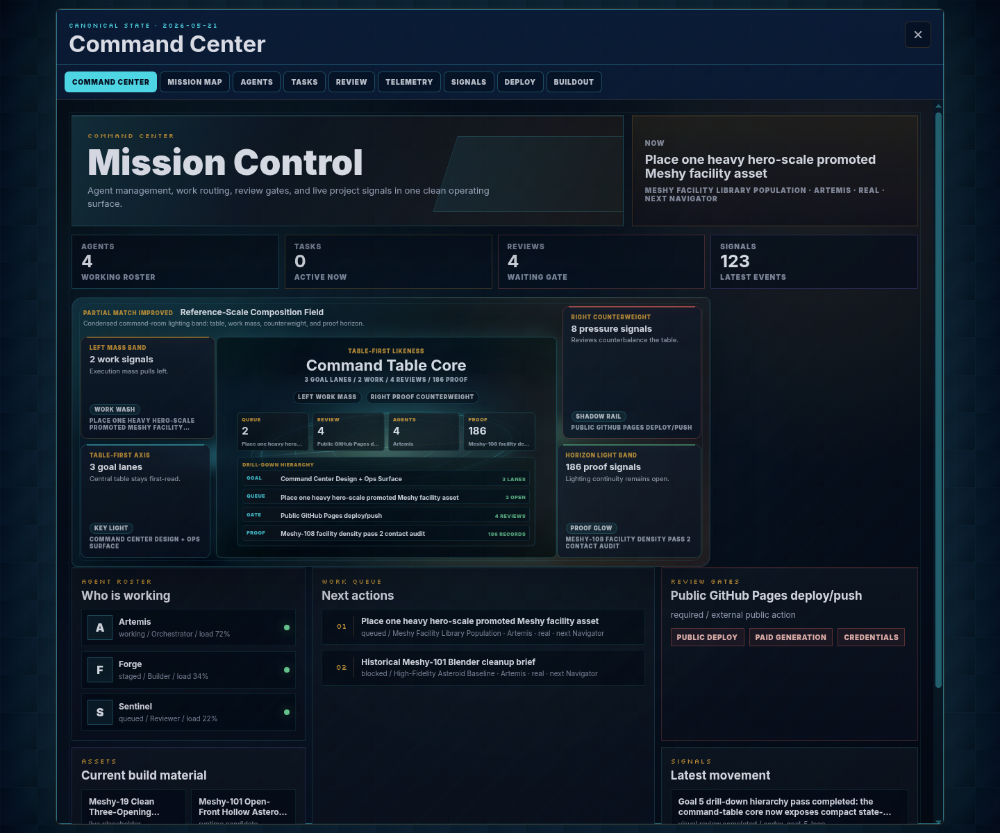

Reference direction
Holographic command-table moodboard: central table as hero object, orbiting operational data, layered depth, asymmetric density, and command-room contrast.

Goal 5 / Holo-table overlay
Holographic command-table moodboard: central table as hero object, orbiting operational data, layered depth, asymmetric density, and command-room contrast.
Current overlay-only capture from ?overlay=1&console=overview. The table core now carries compact state-backed goal, queue, gate, and proof rows under the instrument orbit.

The table core now exposes goal, queue, gate, and proof rows as table-attached state.
The row hierarchy gives orbit data a clearer scan order while preserving density.
Darker core, chip grid, and stacked rows improve contrast and hierarchy.
Goal, task, review, artifact, and event data remain grounded in canonical state.
Desktop/mobile captures and this side-by-side board are recorded after the pass.
Board compares the reference moodboard, updated overlay capture, and five canonical zone verdicts.
No reference-complete claim. This board records the drill-down hierarchy pass for the next visual iteration.
Use this comparison to choose finer contrast polish or a tighter peripheral hierarchy pass.